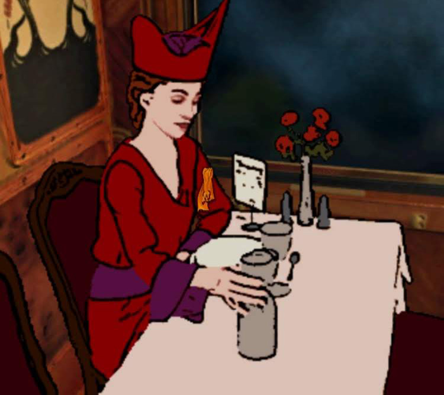

The Last Express
Chicago Gamespace is delighted to present the computer game The Last Express (1997) by Jordan Mechner and Smoking Car Productions. Featured as part of the multi-site exhibition The Plot Thickens: Storytelling in Gaming, The Last Express was notable for its evocative setting aboard the Orient Express on the eve of World War I, its richly rotoscoped Art Nouveau graphics, and score by composer Elia Cmiral. Players interweave with the story in a real-time simulation of events: characters move, speak, and act on their own schedules, and the player’s choices truly shape the unfolding narrative. Unlike many other games of its time, The Last Express had excellent writing and voice acting, and marked a breakthrough moment in interactive storytelling by its sheer quality. Its cinematic sensibilities and sweeping score by composer Elia Cmiral added further depth to the game experience and brought best practices from film into games.
Vistors to the exhibit will have an opportunity to play The Last Express on orginal PC hardware and view the game’s original box art and contents. Fine art prints by Jordan Mechner will also be on display.
The Last Express is part of a multi-site exhibition titled The Plot Thickens: Storytelling in Gaming. Presented at venues across Michigan and Illinois, Plot Thickens explores different approaches to narrative and storytelling in games. It is organized by Chicago Gamespace and West Shore Community College and curated by Jonathan Kinkley and Eden Ünlüata-Foley.
The Last Express
February 7, 2026
Hours: Saturday 11am – 5pm
Location: Chicago Gamespace, 2418 W Bloomingdale Ave, Chicago, IL